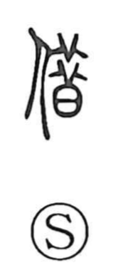

借

Uncategorized
Kun: kariru | On: shaku
to borrow ・ loan ・ debt
Explanation
Borrow is a phono-semantic character formed with the person element on the left and 昔 as its phonetic on the right, which supplies the on-reading shaku and ties it to the same series as 藉 (“to spread”). The Shuowen glosses it as “to borrow; to make use of,” with the key nuance of something provisional or temporary. In early usage it also appears adverbially in expressions like 借使 and 借如, meaning “if, suppose,” and the Book of Odes (Greater Odes, Yoku) employs 借 in this concessive sense. From the core idea of making temporary use grew the everyday meanings of borrowing and, by extension, the paired notion of lending and borrowing (貸借) of goods or money.